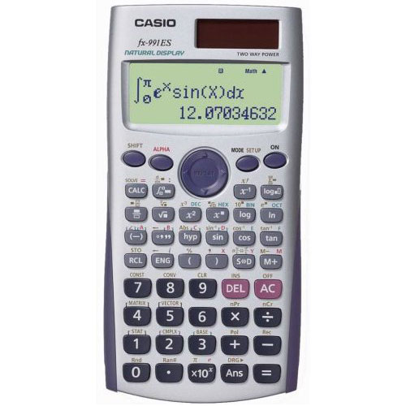
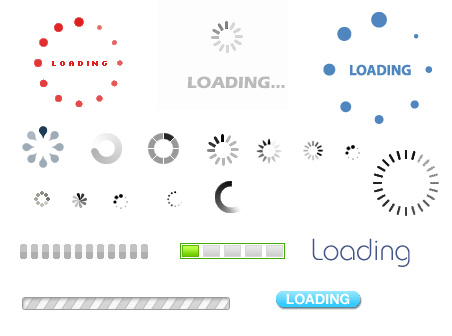

Herşeyi olabildiğince basitleştirin, ama olması gerekenden fazla değil.
Albert Einstein
Uzayda yer çekimi olmadığından tükenmez kalemler çalışmıyordu. Nasa problemi
çözmek için hatırı sayılır bir bütçe ayırdı ve yeni bir proje başlattı. Yıllar
sonra ABD'li uzay bilimciler bu sorunu Sovyetlerin nasıl çözdüğünü Ruslara
sorduklarında aldıkları cevap gayet basitti.
Kurşun kalem kullandık.
Uzaya füze bile gönderseniz ki yöndermiyoruz en basit yolu tercih ediniz!!!
Basitliği tercih etmemizin en temel sürdürülebilirlilik ve kolaylıktır. Hiç bir programcı anlaşılmayan, sürdürülebilirliliği zor programlar yazmak istemez. Hiç bir müşteride kullanımı zor, anlaşılmayan programlar kullanmak istemez.
Basitlik ile ilgili sözler..
Soru 2 + 2 = ?
Hangi hesap makinesini kullanmak istersiniz?
Basitliği elde etmenin en basit yolu dikkatli bir eksiltmeden geçer.
Eğer bir sistem içindeki bir unsur olmadan çalışıyorsa, o unsur çöptür, gereksizdir, kaldırılmalıdır. Bir sistemi basitleştirmenin en güzel yöntemi sadeleştirmekten geçmektedir.Biz buna SHE kanunu diyoruz.
Küçültmek, beklentileri azaltır.
Gizlemek, beklentileri kullanıcının idare etmesini sağlar.
Somutlaştırmak, değer hissi katar.
Düzenleme çoklu bir sistemin daha az görünmesini sağlar.
Zamandan tasarruf basitlik hissi verir.
Apple firmasının yaptığı araştırmaya göre insanlara uzun süren işlemlerde ne kadar zaman kaldığını göstermek veya işlemin kaçta kaçının bittiğini göstermek zaman baskısını ortadan kaldırıyor.
Sürdürülebilir, kullanılan, tercih edilen programlar için yalın kod yazmalıyız. Basit olan mükemmeldir.